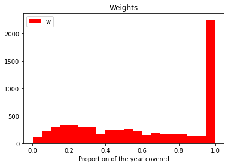

Testing for Asymmetric Information in Insurance with Deep Learning
This content can be styled with a border
We read the data and we convert the variables to their correct types:
selecting variables
We will work with a subset of the variables. Our endogeneous variables will be Comprehensive coverage for the choice of contract \(y_1\) and Not at fault for the occurrence of a claim at fault \(y_2\). We also use the variable Duration to weight the observations, and 9 categorical covariates.
pd.crosstab(lhs_vars['Comprehensive coverage'], lhs_vars['Claim at fault'])
Claim at fault
0
1
Comprehensive coverage
0
3696
302
1
2203
132
fig, ax = plt.subplots()ax.hist(w, color='red', label='w', bins=20)ax.set(xlabel="Proportion of the year covered", title="Weights")ax.legend()plt.show()

first neural network
We fit a simple neural network to \(y_1\), tentatively:
model = keras.Sequential([ layers.Dense(1, activation="sigmoid", input_dim=9),])model.compile(optimizer="rmsprop", loss="binary_crossentropy", metrics=["accuracy"])model.fit(X.values[:3200,:], y1.values[:3200],epochs=5, batch_size=128)